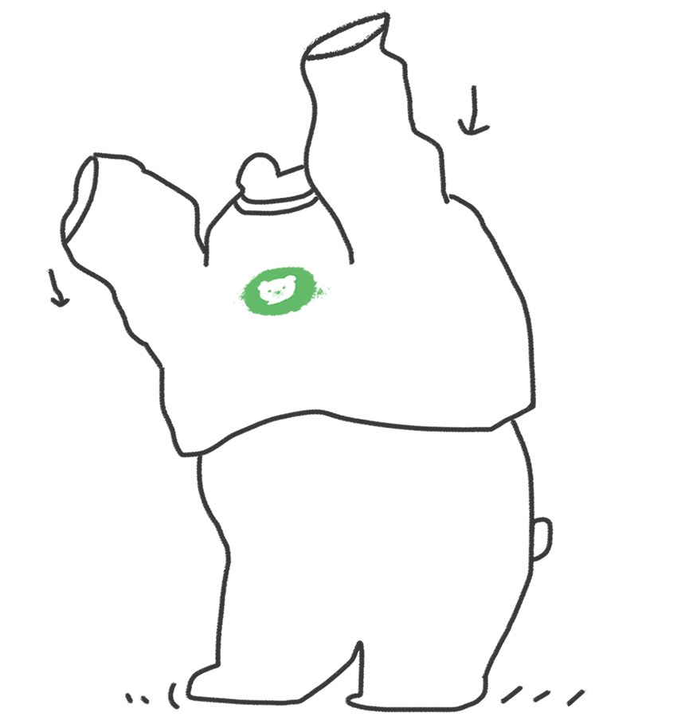
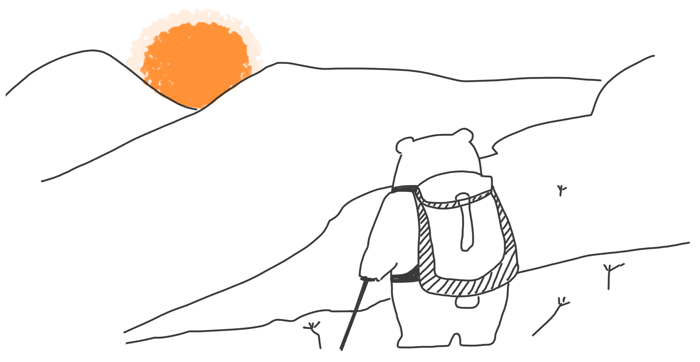
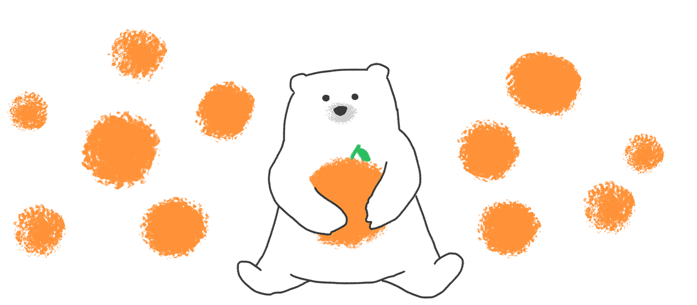

See You BearyChat
这是一个纪念 BearyChat（倍洽）与一熊科技的时间线页面。BearyChat 是一款基于 ChatOps 的跨平台团队沟通、协作与信息集成工具，强调第三方服务集成、自定义机器人、文件共享、消息整理和全局搜索。
页面按照 2015 至 2021 的时间线回顾“小熊开始看世界”“享受工作”“有了全新外貌”“向远方探索”“拥抱变化”以及 Farewell to BearyChat。
2015，小熊开始看世界
BearyChat / 倍洽的纪念时间线从 2015 年开始。
2016，享受工作
BearyChat 围绕团队沟通、协作和工作流持续演进。
2017，有了全新外貌
BearyChat / 倍洽在这一年带来了全新外貌和产品更新。

2018，向远方探索
围绕 ChatOps、机器人和第三方服务集成，一熊科技继续向远方探索。

2019 到 2021，拥抱变化
这段时间线记录了 BearyChat 与一熊的变化和延续。

Farewell to BearyChat，六年，感谢一路同行
这是一张写着 Farewell to BearyChat 的告别页面，纪念 BearyChat 与陪伴它的一路同行者。